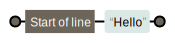

Getting Data from the Web
An Introduction to Web Scraping
Created by João Silva / @joaopcgsilva
What is Web Scraping?
What is Web Scraping?
Technique of extracting information from websites. - Wikipedia
Web Scraper Input
Extract Relevant Parts (List)
Extract Relevant Parts (DETAIL)
Web Scraper Output
| Description | Company | Salary (€) | Skills |
|---|---|---|---|
| Swift/Objective C Programuotojas | Pixelmator | from 900 | Swift, Objective-C |
| Full Stack Programuotojas | Dycode | 800-1800 | PHP |
| Automatino Testavimo Inzinerius | Norcurrent | Unavailable | Java, C++, Python |
Why Do It?
Because you can
Why Web Scraping?
- The World Wide Web is a vast repository of information, designed for being presented to humans, not computers
- Getting data from the Web:
- Copy-and-paste
- API (Application Programmer Interface)
- RSS or Atom Feed
- Data Export Functionality
- Web Scraping!
- Endless use cases
Use Cases
News aggregator
Google News
Aggregated Site
tv3.lt
Aggregated Site
15.lt

News aggregator
Google News
News aggregator
Instapaper
Real estate
Aroudas.lt

Price Comparison
Kaina24.lt

Aggregated Site
RDE.lt
Weather Monitoring
Automated testing
Job Boards
cvbankas.lt
Aggregated Site
Microsoft Careers
Flight Scanner
SkyScanner
Aggregated Travel Options
Fun
CERN Restaurant Menu
CERN Restaurant Menu
The only limit is your imagination
How to get started?
How to Scrape?
- Use an HTTP Client to download HTML from a web page
- Scrape the relevant parts of the HTML
HTTP Request
HTTP Client
Command-line tools
curl http://en.cvbankas.ltHTTP Requests with node.js
npm install requestvar request = require("request"); var url = "http://en.cvbankas.lt"; request(url, function(error, response, body) { console.log(body); });
Web Scraping Toolbox
Web Scraping Toolbox
- Copy-and-paste
- String manipulation (e.g.
substring,indexOf) - Scrape websites visually (e.g. Portia)
- Regular Expressions
- HTML Parser
Regular Expressions

Source: https://xkcd.com/208/
What is a Regular Expression?
- A text string used to describe a search pattern
- Wildcards on steroids
-
Popularized by Unix utilities:
ls *.txtgrep -E "2015-11-01.*Exception" log.txt
- Ubiquitous
Regular Expressions 101
Characters and Metacharacters
-
/l/- single character:Hello World -
/or/- character sequence:Hello World -
Metacharacters with special meaning:
.\( )[ ]{ }^$|*+ /./- dot matches any character:Hello World
/\./- literal dot:Hello World.
Regular Expressions 101
Repetitions * + ? { }
-
/l.*x/- zero or more:linux,latex,lx -
/l.+x/- one or more:linux,latex, but notlx -
/colou?r/- zero or one time:colorandcolour -
/#[0-9a-f]{6}/- matches{n}times:#ff0099
Regular Expressions 101
Character Sets [ ]
/[oe]/-Hello World/H[ea]llo/-HelloandHallo/[0-9]/- any digit:ID#12345/[0-9]+/- one or more digits:ID#12345/[^0-9]/- any non-digit:ID#12345/[a-z]/- any lowercase letter:ID#12345
Regular Expressions 101
Shorthand Character Sets [ ]
/\d/- any digit (≈/[0-9]/)/\w/- any word character (≈/[A-Za-z_0-9]/)/\s/- whitespace (space, tabs, line breaks)
Regular Expressions 101
Anchors ^ $ and Alternation |
/^/- match at the start of the string:/^Hello/matchesHello World,
but does not match WorldHello
/$/- match at the end of the string/cat|dog/- alternation:I like catsanddogs
Regular Expressions 101
Grouping and Capturing ( )
/(not )?to be/- matchesto beandnot to be/not? to be/- onlytis optional/<div>(.*)</div>/- capture text insidedivtags = "some text" s.match(/(.*)/) ["some text"]
Our first Web Scraper
Extract Current Temperature in Vilnius
Our first Web Scraper
Extract Current Temperature in Vilnius
Our first Web Scraper
Extract Current Temperature in Vilnius
Our first Web Scraper
Extract Current Temperature in Vilnius
- Download HTML from The Weather Network for Vilnius
curl http://mobile.theweathernetwork.com/weather/lhxx0005 - Use regular expressions to extract the current temperature
egrep -o "[0-9]+°"
A more complex scraper
A more complex scraper
A more complex scraper
A more complex scraper
- Find the
<strong>tag which contains "CERN:" - Find all sibling
<strong>tags - Extract text from the inside of the HTML tag
curl -s http://grid.jinr.ru |
grep -Pzo "(?s)]+>CERN:.*" |
grep -Eo "[^<]+" |
sed 's/<\/\?strong>//g'Do not parse HTML with RegEx
Have you tried using an HTML parser instead?
HTML Parser
Parse HTML into Document Object Model (DOM)

DOM Extraction Techniques
- XPath
- CSS Selectors / jQuery
XPath
- XML Path
- Query language for selecting nodes from an XML document through
path expressions - Why is it relevant to Web Scraping?
- XHTML is HTML which adheres to XML syntactic rules
Path Expressions
File system path
C:.
├───Program Files
├───Projects
├───Users
│ ├───jsilva
│ │ ├───Desktop
│ │ ├───Documents
│ │ └───Pictures
│ └───admin
├───Scripts
└───wwwroot
Change to the Desktop directory
cd C:/Users/jsilva/DesktopXPath Expressions
<html>
<head>
<title>CERN Spring Campus 2016</title>
</head>
<body>
<div>
<p>The school will be held at VGTU (Vilnius, Lithuania)</p>
<p>Working language: English</p>
</div>
</body>
</html>
Select the title of the page
/html/head/titleSelect the first paragraph
/html/body/div/p[1]Our complex web scraper (revisited)
Our complex web scraper (revisited)
- Find the
<strong>tag which contains "CERN:"//strong[contains(text(),'CERN')] - Find all sibling
<strong>tags//strong[contains(text(),'CERN')]/following-sibling::strong - Extract text from the inside of the HTML tag"
//strong[contains(text(),'CERN')]/following-sibling::strong/text()
XPath with node.js
npm install xmldomvar request = require("request"); var xpath = require('xpath'); var dom = require('xmldom').DOMParser; request("http://grid.jinr.ru", function (e, r, body) { var doc = new dom().parseFromString(body); var nodes = xpath("//strong[contains(text(),'CERN')]/following-sibling::strong/text()", doc); console.log(nodes); });
Output
J. Ferguson
T. Kurtyka
D. Mathieson
R. TitovDOM Extraction Techniques
- XPath
- CSS Selectors / jQuery
CSS Selectors / jQuery
- CSS is a stylesheet language that describes the presentation of an HTML document
- CSS Selector is a pattern used to select the element to style in an HTML page
- jQuery Selectors are based on CSS Selectors with some extensions
CSS Selectors 101
Element Selector
li { color: red; }
Some paragraph
- Item 1
- Item 2
- Item 3
Some paragraph
- Item 1
- Item 2
- Item 3
CSS Selectors 101
#id Selector
#second { color: red; }
Some paragraph
- Item 1
- Item 2
- Item 3
Some paragraph
- Item 1
- Item 2
- Item 3
CSS Selectors 101
.class Selector
.yellow { color: yellow; }
Some paragraph
- Item 1
- Item 2
- Item 3
Some paragraph
- Item 1
- Item 2
- Item 3
CSS Selectors 101
Element inside Element Selector
div p { background-color: red; }
My name is João
I live in Geneva.
I work at CERN.
My name is João
I live in Geneva.
I work at CERN.
CSS Selectors 101
Element > Element Selector
div > p { background-color: red; }
My name is João
I live in Geneva.
I work at CERN.
My name is João
I live in Geneva.
I work at CERN.
CSS Selectors 101
[attribute] Selector
a[href$=".pdf"] { color: red; }
Some pdf
Some txt
Some txt
Extract All PDFs from a Page
<html>
<head>
<title>CERN Spring Campus 2016</title>
</head>
<body>
<div>
<a href="http://someurl/Pres1.pdf">Getting data from the Web</a>
<a href="http://someurl/Other.pdf">Modern-day JavaScript</a>
</div>
</body>
</html>
All presentation links are in the following format:
<a href="http://someurl/Pres1.pdf">Getting data from the Web</a>Extract All PDFs from a page
jQuery Selectors with node.js
npm install cheeriovar request = require("request"); var cheerio = require("cheerio"); var url = "http://springcampus.cern.ch"; request(url, function (error, response, body) { var $ = cheerio.load(body); var links = $("a[href$='.pdf']"); links.each(function (i, link)) { var fileName = "/jsilva/Presentations/" + link.href; request(link.href).pipe(fs.createWriteStream(fileName)); } });
Extract Java jobs in Vilnius
http://en.cvbankas.lt/?miestas=Vilnius&padalinys%5B0%5D=76Identify all relevant parts
http://en.cvbankas.lt/?miestas=Vilnius&padalinys%5B0%5D=76Identify all relevant parts
http://en.cvbankas.lt/?miestas=Vilnius&padalinys%5B0%5D=76Extract Java jobs in Vilnius
var request = require("request"); var cheerio = require("cheerio"); var url = "http://en.cvbankas.lt/?miestas=Vilnius&padalinys%5B0%5D=76&keyw=;" request(url, function (error, response, body) { var $ = cheerio.load(body); var jobs = $(".list_article"); jobs.each(function (i, job) { var jobDetailsUrl = $(job).find("a.list_a").attr("href"); var descr = $(job).find("h3").text(); var salary = $(job).find(".jobadlist_salary").match(/[0-9]+/); var company = $(job).find(".heading_secondary").childNodes[1].text(); console.log(`Found a ${descr} job w/ salary ${salary} EUR.`); } });
Extract details
request(url, function (error, response, body) {
var $ = cheerio.load(body);
var jobs = $(".list_article");
jobs.each(function (i, job) {
var jobDetailsUrl = $(job).find("a.list_a").attr("href");
/* ... */
request(jobDetailsUrl, function (error, response, body) {
var details = $("#jobad_cont_main").text();
if (details.matches(/Java/)) {
sendEmailAlert("A new Java job was found...");
}
}
}
});
Crawling
Crawling
request(url, function (error, response, body) {
var $ = cheerio.load(body);
var jobs = $(".list_article");
/* ... */
var nextPage = $(".pages_ul");
if (nextPage.text().matches("»")) {
/* Recursive call to process next page... */
}
});
Challenges
Irregular Structure
- HTML parsers require sane and consistent HTML structure
- Hard to parse broken HTML
<p>I live in Geneva. <div>
I work at CERN.
- Use a tool to clean broken HTML (e.g. HTMLTidy)
Rapidly changing structure
- HTML of a webpage can change
- In theory this can break the web scraper
In theory, theory and practice are the same.
In practice, they are not. - Albert Einstein
JavaScript
- Many sites now require JavaScript to be rendered
- Content is not available on page load (e.g. AngularJS)
- Solution?
- Scrape mobile version of the site
- Browser automation tools (e.g. Selenium, Geb)
With great power,
comes great responsability. - Spiderman's Uncle
Legal considerations
- Legal gray area
- Enforcement of terms of service
- Ryanair vs. Vivavacanes (Opodo)
Google scrapes all the time
Signs you are up to no good
- Evading CAPTCHAs and other security features
- Potential for denial-of-service
- Removing references to original site
- Check terms of service, really
Ethical Scraping
- Respect terms of service
- Potential for denial-of-service
- Robots.txt
- Running your scraper in off-hours
- Request spacing
Takeaways
- Web Scraping is a very powerful technique for both fun and profit
- How to Scrape?
- Tooling available for most programming languages
- Every content which is visible to a user can be scraped
- Beware of its legal implications.
- Scrape responsibly.